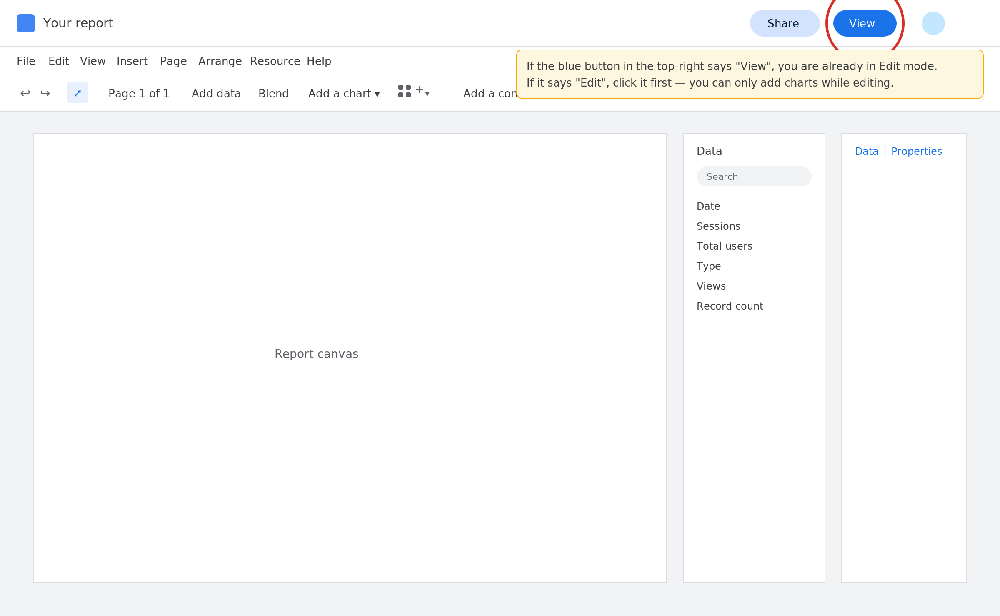
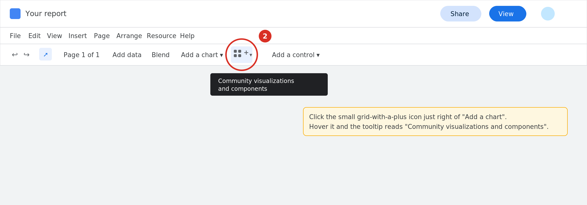
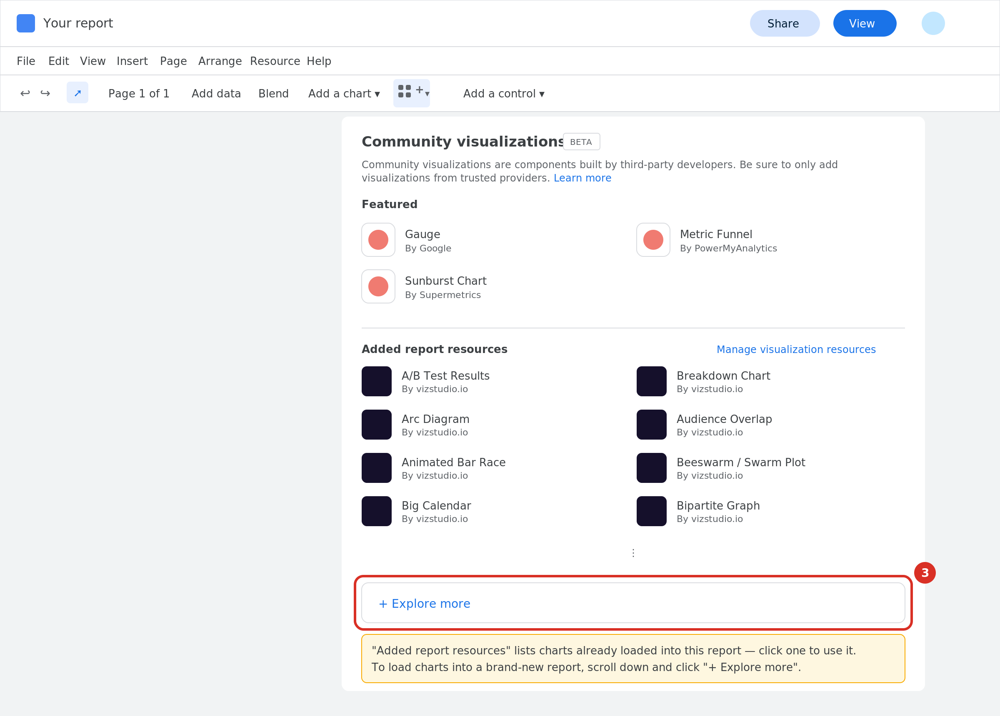
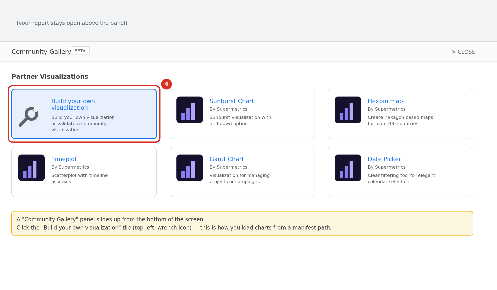
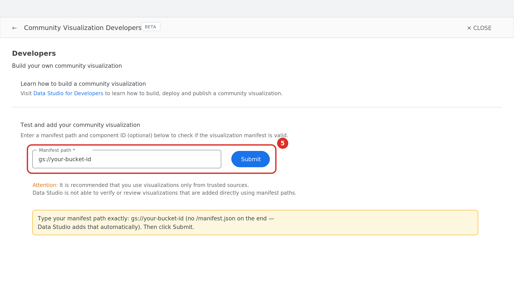
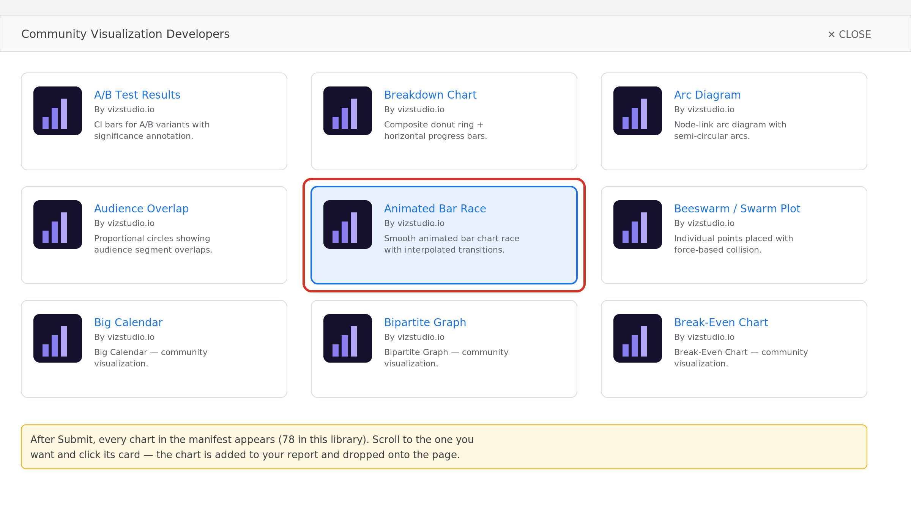
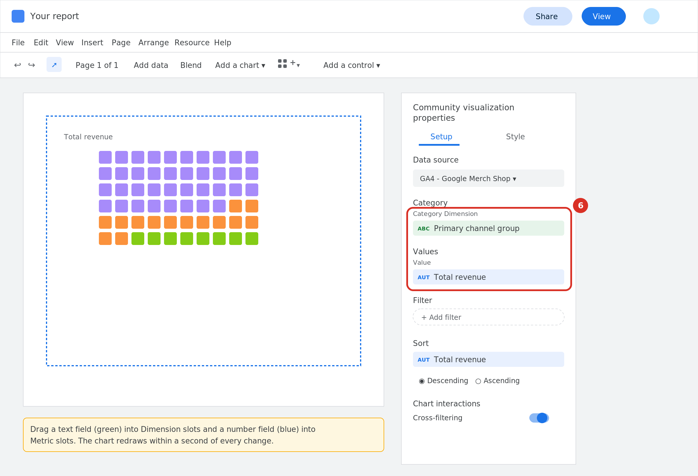
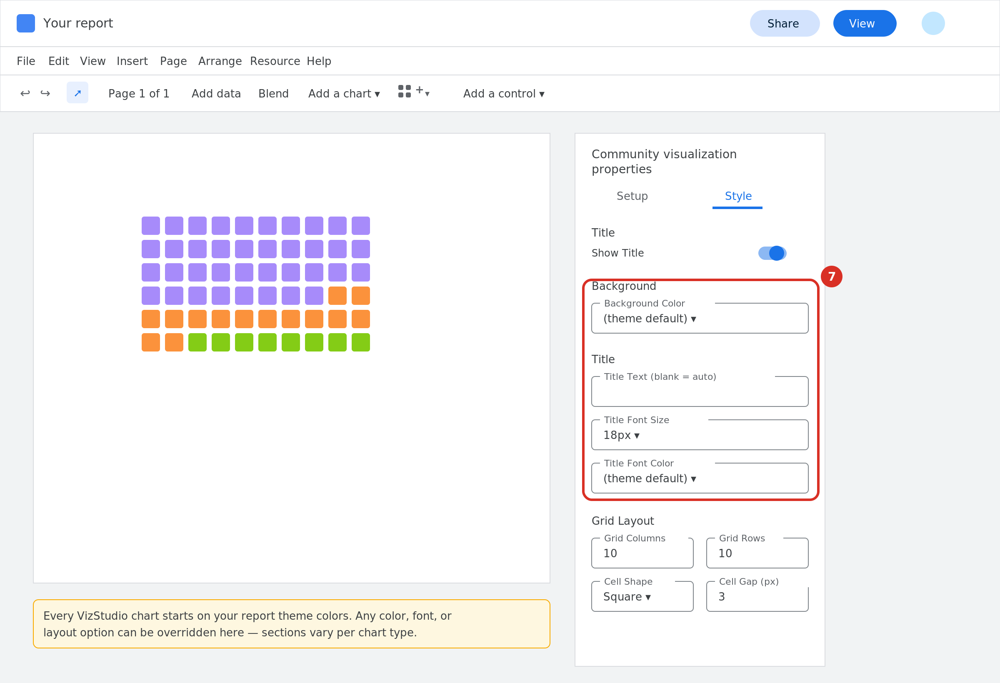

Add a community chart to Data Studio
From a blank report to a fully styled vizstudio chart in eight steps. No code, no extensions — just the manifest path we send you when you get access.
gs://your-bucket-id and arrives with your welcome email. In this guide we use the placeholder gs://your-bucket-id; swap in your real path wherever you see it.
Open a report in Edit mode
Sign in to lookerstudio.google.com (Google's current home for Data Studio) and open the report you want the chart in. Make sure you're editing — the top-right button reads View (offering to switch back) and the File / Edit / View menu bar is visible.

Click the Community visualizations button
On the toolbar, just right of Add a chart, click the small grid-with-a-plus icon. Hover it and the tooltip reads “Community visualizations and components”.

Choose “+ Explore more”
A dropdown panel opens with three areas:
- Featured — Google and partner promoted charts
- Added report resources — chart libraries already loaded into this report. If vizstudio is already here, click a chart and jump to step 7.
- + Explore more — at the very bottom. Click it to load new charts.

Pick “Build your own visualization”
A Community Gallery sheet slides up from the bottom. Click the top-left tile, Build your own visualization (the wrench icon). Don't worry — you're not building anything; this is just how Data Studio loads charts from a path.

Paste the manifest path and Submit
The sheet switches to Community Visualization Developers with a single Manifest path field. Paste your path — for example gs://your-bucket-id — and click Submit.
Two things to get right: it's the bucket path only (Data Studio appends /manifest.json automatically), and there's no trailing slash.

Pick your chart
After Submit, every chart in the library appears as a card — name, thumbnail, description, all 78 of them. Click a card and the chart is added to your report resources and dropped onto the current page.

Drop in dimensions and metrics
Select the chart on the canvas. The right panel becomes Community visualization properties with two tabs: Setup and Style. In Setup:
- Confirm the Data source
- Drag a categorical field into the Dimension slot(s)
- Drag a numeric field into the Metric slot(s)
- Add a Sort, Filter, or Date range as needed
- Flip on Cross-filtering under Chart interactions to let clicks filter the rest of the page
The chart re-renders within a second of each change.

Style it your way
Click the Style tab. Every vizstudio chart ships a panel section per concern — colors, fonts, axes, legend, tooltips, labels, plus chart-specific toggles. Charts inherit your report theme by default, so they match the rest of your dashboard out of the box; override anything you like. Resize with the selection handles — every chart is fully responsive.

Two ways to add the same chart
| Method | Best for | Steps |
|---|---|---|
| Manifest path | Discovery — browse every chart in the library | 1 → 2 → 3 → 4 → 5 → 6 |
| Component ID | Repeat use of a known chart — paste the path and the chart's ID (e.g. bump-viz) to skip the picker | 1 → 2 → 3 → 4 → 5, with the Component ID field filled in |
Repeat users with a known component ID get a chart on the page in under 60 seconds.
Troubleshooting
The “authorize this visualization” prompt keeps coming back
“Failed to load community visualization”
/manifest.json, no trailing slash. If it still fails, reach out and we'll verify your library's access from our side.Chart renders blank, no error
Cross-filter clicks do nothing
Ready to try it with real charts?
Get your manifest path and all 78 charts — free to start, no credit card.